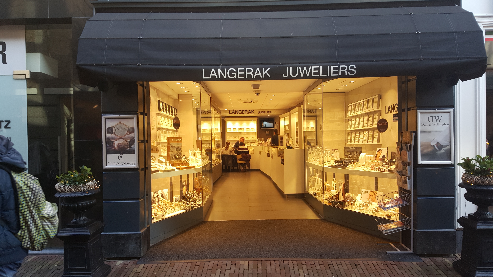
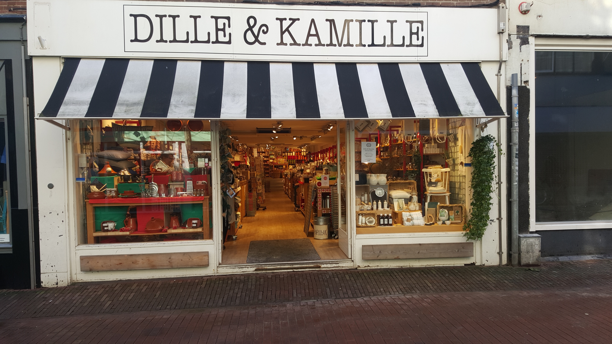

Speciaalzaken

Juwelier Langerak is sinds 1966 een begrip in de wijde omgeving van Haarlem en staat bekend om de ruime collectie aan sieraden, maar vooral ook om de enorme vriendelijkheid, gastvrijheid en service.
Door de vele merken en het veelzijdige assortiment, hebben we sieraden voor jong en oud.
Naast de vele merkartikelen is er ook nog een grote huiscollectie in goud en zilver.
Door deze grote voorraad zal er zelden niet aan uw behoefte worden voldaan.

Bij Saar Thuis is een winkel met Family Lifestyle.
Bij Saar Thuis verkoopt prachtige kleding & accessoires voor zowel het huis, de vrouw, de man en natuurlijk de kinderen.
Bij Bij Saar Thuis ben je aan het juiste adres voor mooie en kleurige tassen, sjaals, unieke omslagdoeken, laarzen en hele mooie accessoires en sieraden.

De wereld van Jansje is een verrassende cadeauwinkel, lunchroom en webshop met een prachtige collectie duurzame producten uit de hele wereld waarbij Fair Design centraal staat.
Van hippe olieblikken tot vintage sieraden, recycle, upcycle, hip en uniek.
Alles wordt vanuit maatschappelijke betrokkenheid ontworpen en geproduceerd.
Bij Jansje werken betrokken en goed opgeleide mensen met een beperking.
In de winkel en onze lunchroom bent u altijd welkom.

De meeste artikelen van Dille & Kamille Haarlem zijn gemaakt van natuurlijke materialen als hout, aardewerk en katoen.
Stap de winkel binnen en weet je omgeven door robuuste eenvoud. Hier vind je alle spullen voor in huis, keuken en tuin.
Dwaal rond tussen de houten pollepels, peper en zout stellen, theesoorten, bloempotten, snijplankjes en nog veel meer hebbedingetjes.
Klassieke muziek en de heerlijkste geuren, afkomstig van tientallen zeepjes en kaarsen, doen de rest.

Jasmijn bloembinders heeft een uitgebreid assortiment aan bloemen en planten. Rozen uit Equador, tulpen uit Frankrijk en de meest mooie orchidee soorten.
Ook zijn zij gespecialiseerd in een mooie collectie zijden bloemen en planten, niet van echt te onderscheiden.
Verder heeft Jasmijn Bloembinders een grote collectie aan mooie vazen, accessoires, kaarsen, antiek en diverse andere producten van gerenommeerde ateliers om een totaal plaatje te kunnen laten zien voor uw eigen interieur.
Zo heeft Jasmijn Bloembinders voor iedereen wat wils.
De winkel veranderen we regelmatig van kleur, collectie en opstelling zodat u zich telkens weer in een nieuwe wereld waant.

Biljartservice W. van den Broek is gespecialiseerd in de maak en verkoop van biljartkeu's. Maar ook andere biljartartikelen worden verkocht in deze speciaalzaak.
Zo kun je er terecht voor biljartballen, krijt en opbergtassen. Daarnaast vind je bij Biljartservice W. van den Broek ook dartborden en dartpijltjes.
Alles om je favoriete sport uit te oefenen vind je bij Biljartservice W. van den Broek aan de Zijlstraat in Haarlem.